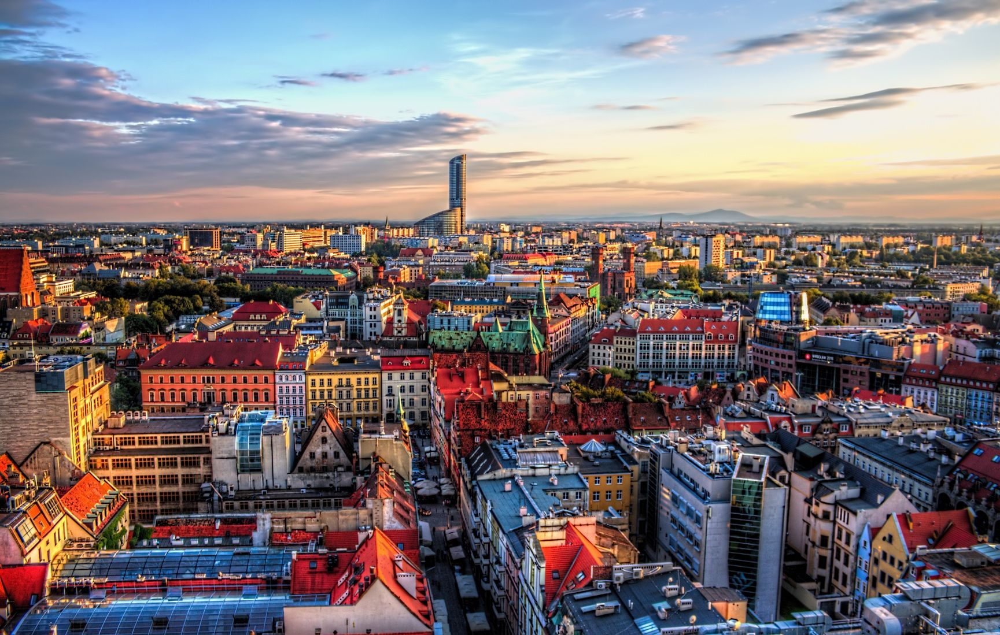

Zdjęcia
Pamiątki z wakacji

Warszawa -stolica Polski i województwa mazowieckiego, największe miasto w kraju, położone w jego centralnej części, na Nizinie Środkowomazowieckiej, na Mazowszu, nad Wisłą.
Kraków-miasto na prawach powiatu położone w południowej Polsce nad Wisłą, drugie co do liczby mieszkańców[1] i powierzchni miasto kraju[1], formalna stolica Polski do 1795 r.
Poznań- miasto na prawach powiatu w zachodniej Polsce, położone na Pojezierzu Wielkopolskim, nad rzeką Wartą, u ujścia Cybiny.
Sopot- miasto na prawach powiatu w północnej Polsce nad Zatoką Gdańską (Morze Bałtyckie), położone na Pobrzeżu Gdańskim, między Gdańskiem a Gdynią, z którymi tworzy Trójmiasto.

Wrocław- miasto na prawach powiatu w południowo-zachodniej Polsce, siedziba władz województwa dolnośląskiego i powiatu wrocławskiego.